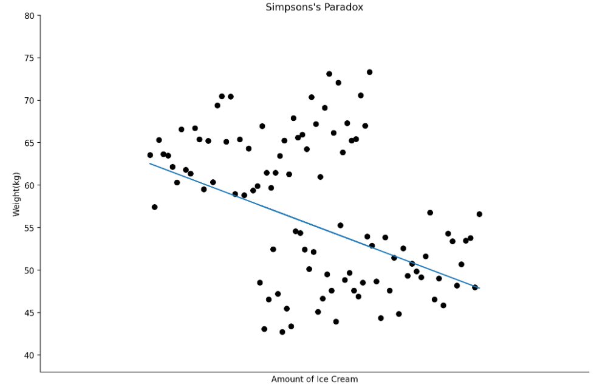

为什么需要指标体系?
指标：一个方便的工具
最近频繁学到“转化率”“点击率”等等，这些一般统称为“Metrics”（指标）。 KPI (key performance indicator) 也是其中之一。它们把不同维度的数据综合变成一个数，以方便阅读和研究。比如转化率中的注册转化率，表示浏览 app 的新人里有多少人会注册，可以用来衡量一个 app 对新用户的吸引力。
这类做法里，比较经典的是股价指数，比如国内的上证指数、美国的 S&P 500 指数。S&P 500 指数起源于上世纪20年代，它是把美国 500 支大公司的股票取一个加权平均，变成一个新的指数，像股票一样有自己的涨跌。对于复杂的股市来说，这个指标既有代表性，也有引导性。它被用来衡量一些抽象的东西：经济水平、投资者的整体信心……而不仅仅是打个平均分。
在互联网行业里，同样有许多抽象的东西需要衡量。产品需要关注用户使用体验，电商需要了解用户消费偏好，做游戏则要提升沉浸感，等等。如果一家公司只有几个用户，通过问询就可以解决；但如果有上百万个用户，就如同股市里有成千上万支股票一样，我们就需要一个笼统的东西来概括。数字通常是最合适的载体。
一百万个用户对“摇一摇”功能的使用体验如何？可以统计有多少人使用，以多快频率使用它，还可以看人们用完这个功能之后的表现——是在 app 里停留得久一些，还是更快地退了出去？用这些数字来表示“使用体验”，背后的理念很直接：一个用户的心理活动，会投射到他的行为上；一个群体的心智，会反映在做一件行为的人数多少上。
指标体系：打个套餐
单个指标的问题在于，所描述的信息有限。联想一个实际问题：一个人每月的总支出都维持在一个数目上下，但他上一个月不小心充了几个 648，所以割去了买衣服包包的开支；下个月出去旅了趟远游，所以没时间打游戏充钱，等等。一个人的消费结构都可能不同，更何况是一群不同的人。
统计学有个辛普森悖论，指的是如下一种情况：
如上图显示：冰淇淋吃得越多，体重越高（我瞎编的）。但是注意到，这个正相关的趋势是分别存在于男性和女性两个群体内的。对比男性和女性，女性的体重整体低于男性，且女性吃的冰淇淋整体上略多于男性，如果我们一开始将数据分成男 / 女两个集合，可以看出冰淇淋和体重正相关。但如果我们不知道被测者性别，而将他们看为一个整体，就会变成这样：
图上蓝线是最小二乘法给出的回归曲线，它的斜率为负，说明冰淇淋吃得越多，人的体重越轻。说明对数据结构未知时，我们找出的趋势可能有偏差。因此仅看体重和吃冰淇淋量这两个指标还不够，还要观测男女的体重区别，男女吃冰淇淋量的区别，吃冰淇淋对体重的影响在男性和在女性中的区别……尽可能地找出数据的真实结构，去刨除结构对趋势的影响。
这是一个简单的二维的例子，现实中有不止一个变量的情况下，我们的数据处在高维空间中，没有办法像这样子在图上画出来。而数据的结构也不一定只是男女有别，通常无法通过常识来辨认。所以需要建立一个指标体系来拓宽指标的维度，更加准确地定位结构。
方法论：核心指标和漏斗模型
关于如何建立指标体系，网上能搜到五花八门的方法，什么核心指标拆解，漏斗模型，几个W几个H法……挑选两个我自己觉得比较 make sense 的，北极星指标法和漏斗模型重点学习了一下。
北极星指标
北极星指标法其实就是一个分层的结构，把数据分成不同级别，排长向连长报告，连长向营长报告。而作为团长的我们，平时只接收营长的信息，只有当营长报告了问题，才会顺着往下去找连长、排长，分析问题的来源（我觉得被我说绕了）。举个例子，做 APP 的部门都会关注平台的“每日活跃用户数”，这是一个直白的数字。
它平时可能是长这样子的：
我们可以围绕它建立一个体系：比如，点开它可以看到具体的日变化趋势：
这样可以做一些时间上的对比（同比呀，环比呀）等等（我在图上加了一个在线注册用户数，并没有什么用，只是为了好看）。另外，还可以从业务功能的角度，建立一些辅助指标：
上图标了红色和绿色两种块块，红色的块块表示指标下降，绿色的块块表示指标上升。我模拟了一种情况：当天活跃用户数下降，原因是一部分新用户和非会员用户流失。这种情况可能是因为昨天发生过一次引流，来了很多新用户，但这些人并没有留下来继续使用，今天日活就下降了。因此要考虑提升新用户的 app 体验。另外，图里的下单总量、总成本都可以成为一个独立的核心指标，各自拥有自己的体系。
漏斗模型
漏斗模型是我觉得比较有意思的一个。他则更像一种思维方式，把用户围绕 app 做的行为，看成是一个有始有终、环环相扣的流程，比如浏览 -> 加入购物车 ->下单就是一个小流程。我总要先浏览商品，才会把它添加进购物车，之后才会下单。反过来则不然，不是每一个浏览商品的人都会买买买，所以每个环节之间都有一定的用户流失。
什么情况下会用漏斗模型分析呢？比如我们发现电商app上每天浏览的用户数很多，但下单量只有1%不到，于是我们想知道用户在哪个环节流失了。
（画的不是漏斗，但意思差不多）
如果不考虑用户退出APP后重新打开，从打开APP到下单的转化率就是 0.6*0.05*0.3 = 0.009 = 0.9%. 其中在浏览商品-加入购物车时流失的 用户最多，只有 5% 的人看完会加入购物车。通俗点讲就是用户没有购买欲望。单独看这里面还有更细的流程。我打开一个商品页面，会看描述、价格和评论，当然也会看有没有货。那用户到底是看到描述以后觉得，“嗯，这个商品不是我想要的”；还是看到差评太多被劝退；又会是觉得价格太贵、没有包邮、或者干脆是因为没有货而退出呢？就要具体问题具体分析啦。
总结
指标体系的用处，本质上是用一种更高效、精准的方式来代替人工监控业务。好的指标体系应该是未雨绸缪的，在问题出现之前就铺好一条解决的通路，并且指标本身一定要围绕问题来建立。然而看了很多建立指标体系的方法，觉得能学到的不多，因为看不到实际的问题，在真正进入工作前难以理解方法背后的业务逻辑。可能要把自己放在一个解决问题的情境下，方法才会跳出来。实践出真知嘛。所以我决定，以后再学指标体系，今天下课！